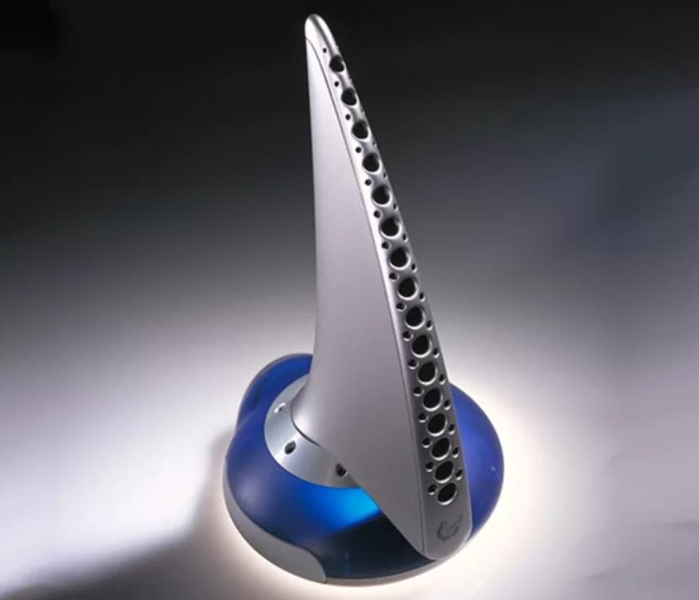

Технологии передачи запаха — технологии, позволяющие передавать, принимать и воспроизводить ароматы с помощью цифровых технологий. При этом используется такое специальное оборудование, как специальные электронные «проигрыватели», а также специальное программное обеспечение.
История развития: В 1959 году в США в городе Нью-Йорк с разницей в три недели публике было представлено сразу две системы имитации запахов — Smell-O-Vision, созданная Хансом Лаубе и AromaRama Чарльза Вайса. Обе системы использовали системы кондиционирования кинотеатров для создания ароматического сопровождения кинофильмов. С применением этой технологии было показано лишь два фильма .Оба фильма получили смешанные оценки критиков и зрителей. Широкого распространения эти системы не получили из-за нестабильной работы и побочных эффектов — распространение запахов по залу не всегда совпадало с действием на экране.
Современные разработки:
В 1999 году компания DigiScents представила устройство под названием iSmell, разработанное для имитации запаха, передаваемого по сети Интернет. Устройство содержало картридж с 128 «основными запахами», которые смешивались в определенной пропорции для создания других ароматов. DigiScents разработала несколько тысяч запахов, которые могли быть переданы через электронную почту или размещены на веб-странице[2]. Сумев привлечь 20 млн$, в 2001 году компания была вынуждена закрыться из-за нехватки финансирования.
Ситуация на 2021 год: Компания Illusion создала технологию и прототип устройства, в котором она используется, при поддержке Национальной технологической инициативы (НТИ). По задумке разработчиков, гаджет в виде колонки распыляет определённые запахи, в зависимости от того, что происходит на экране телевизора.
В основе технологии лежит библиотека запахов, которую специалисты Illusion создали, проанализировав более сотни фильмов. Они выбрали из них самые популярные ароматы, например, запах кофе или свежей выпечки. Разработчики будут добавлять дорожки с запахами в фильмы вручную по аналогии со звуковыми дорожками. Однако в будущем стартап планируют обучить нейросеть для автоматического определения объектов на экране. Распылять запахи будет гаджет Illusion Aroma, который выглядит как колонка. В нём установлены четыре барабана, в каждом из которых находится по семь картриджей с различными запахами. Устройство будет подключаться к телевизору или компьютеру по Bluetooth.Проекты City SmellScape или SuperSense можно отнести к экзотической области исследований, но их нельзя считать уникальными. По всему миру исследователи, изобретатели и ученые ведут работы с запахами.
